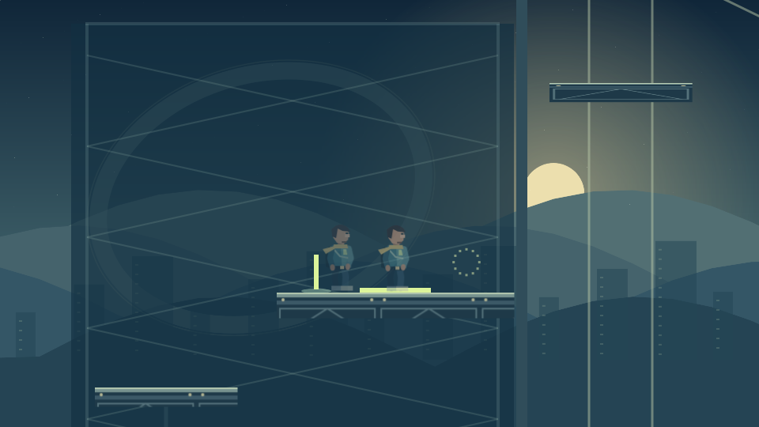

ORIGIN REBORN / AÇÃO + ECOS TEMPORAIS
O teu eco.
Uma nova forma de jogar.
Entra na nova ORIGIN: sobe por um silo, fixa um eco para controlar uma grua e atravessa as coberturas da estação. Há memórias escondidas pelo caminho.
JOGAR A NOVA MISSÃO →
A CAMPANHA
MODO PRINCIPAL · v12.06 missões disponíveis
▶ COMEÇAR CAMPANHA · MISSÃO 01Escolhe uma missão ou começa a campanha pela missão 01.
Explorar as seis missões
- MISSÃO 01 — ORIGIN REBORNNOVA MISSÃO · Percurso vertical, grua temporal e impulsoPOR CONCLUIR
- MISSÃO 02 — NÚCLEO: SINAL FANTASMAFUNDIÇÃO · Mecha pesado e torretasPOR CONCLUIR
- MISSÃO 03 — THE FORGOTTENBIODOMO · Caçadores quadrúpedesPOR CONCLUIR
- MISSÃO 04 — THE TRUTHREATOR DE NULL · Sentinelas e chefe NULLPOR CONCLUIR
- MISSÃO 05 — THE ARCHITECTCIDADE VERTICAL · Atiradores e robôs batedoresPOR CONCLUIR
- MISSÃO 06 — PROJECT ARCASERVIDOR ARCA · Rastejantes e dronesPOR CONCLUIR